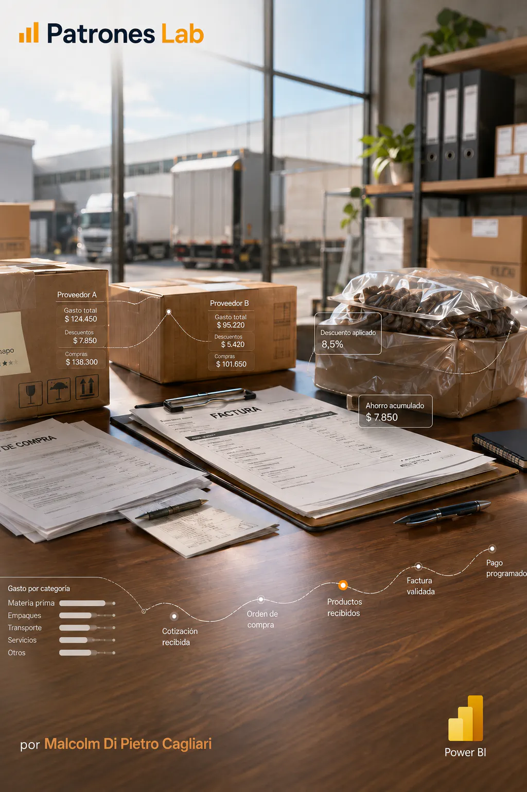

BUSINESS INTELLIGENCE · PROJET 13

Projet 14 · Tableau de bord Power BI
Tableau de bord Power BI · Analyse des dépenses
Rapport exécutif Power BI centré sur l’analyse des dépenses fournisseurs, les tendances mensuelles d’achat, l’utilisation des remises et la répartition par pays, catégorie et niveau de fournisseur.
CONTEXTE ET OBJECTIF
Construire un rapport exécutif pour suivre les dépenses totales, le nombre de factures, les dépenses associées aux remises et les économies réalisées, avec une navigation entre une vue globale et une analyse par fournisseur.
L’objectif est de transformer les données de factures, lignes de facture, fournisseurs, articles, sites, devises et dates en indicateurs utiles pour les achats et les comptes fournisseurs.
DONNÉES ET DIAGNOSTIC
- Le PBIX organise l’analyse autour d’une page d’accueil et de deux pages de rapport : évolution et répartition des dépenses, puis remises par fournisseur.
- Le modèle contient des tables de factures, lignes de facture, fournisseurs, articles, sites, devises, taux de change, dates et calendrier.
- Les mesures et visualisations couvrent les dépenses totales, le nombre de factures, les dépenses avec remise, les économies, la remise moyenne, les jours disponibles pour appliquer les remises, le délai moyen de paiement et l’évolution mensuelle.
- Le rapport comprend des filtres par période, catégorie, niveau et fournisseur, ainsi que des comparaisons par pays, ville, catégorie, sous-catégorie et niveau de fournisseur.
LIVRABLE ET ENSEIGNEMENTS
Le livrable combine modélisation relationnelle, mesures DAX et visualisation exécutive pour soutenir l’analyse des dépenses et identifier les opportunités d’économies.
Le développement est publié sur GitHub avec le fichier PBIX et la documentation du modèle, des mesures et des décisions de conception.